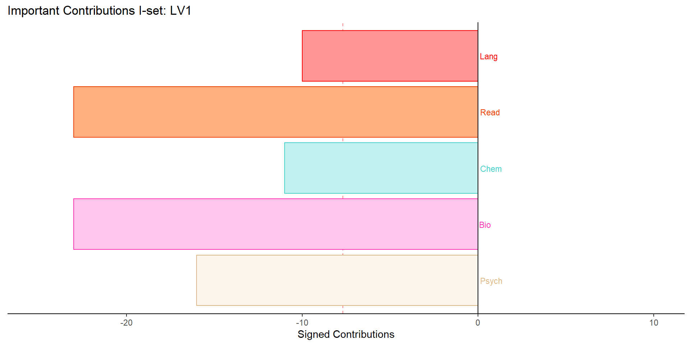

Chapter 6 Partial Least Square Correlation
Using information from the same observations, PLSC finds the correlation of multivariate data in two data tables. The first step is to obtain latent variables from linear combination similar to PCA. Analogously, these latent variables maximize the covariance between the tables. Additionally, factor scores in PCA are akin to latent variables in PLSC while loadings in PCA are akin to saliences in PLSC. Bootstrap and permutation tests are added to the analysis when inferential PSLC is indicated.
A clean start is achieved by removing data and values from the working environment, closing all open graphic devices, and reporting the memory usage. The latter function, garbage collection, may help R return memory to the operating system after removing a large object.
The following code refines the ggplot2 function by removing error messages for multiple overlaps.
## [1] 883 33head(hobbies_3) %>%
kbl() %>%
kable_paper("hover", full_width = F)| Hist | Psych | Politics | Math | Physics | Internet | PC | Econ | Bio | Chem | Read | Geo | Lang | Med | Law | Cars | Art | Religion | Outdoor | Dance | Music | Writing | Passive Sp | Actice Sp | Garden | Celeb | Shop | STEM | Theatre | Friends | Adrenaline Sp | Pets | Gender |
|---|---|---|---|---|---|---|---|---|---|---|---|---|---|---|---|---|---|---|---|---|---|---|---|---|---|---|---|---|---|---|---|---|
| 1 | 5 | 1 | 3 | 3 | 5 | 3 | 5 | 3 | 3 | 3 | 3 | 5 | 3 | 1 | 1 | 1 | 1 | 5 | 3 | 3 | 2 | 1 | 5 | 5 | 1 | 4 | 4 | 2 | 5 | 4 | 4 | female |
| 1 | 3 | 4 | 5 | 2 | 4 | 4 | 5 | 1 | 1 | 4 | 4 | 5 | 1 | 2 | 2 | 2 | 1 | 1 | 1 | 1 | 1 | 1 | 1 | 1 | 2 | 3 | 3 | 2 | 4 | 2 | 5 | female |
| 1 | 2 | 1 | 5 | 2 | 4 | 2 | 4 | 1 | 1 | 5 | 2 | 5 | 2 | 3 | 1 | 5 | 5 | 5 | 5 | 5 | 5 | 5 | 2 | 1 | 1 | 4 | 2 | 5 | 5 | 5 | 5 | female |
| 4 | 4 | 5 | 4 | 1 | 3 | 1 | 2 | 3 | 3 | 5 | 4 | 4 | 2 | 5 | 1 | 5 | 4 | 1 | 1 | 1 | 3 | 1 | 1 | 1 | 2 | 4 | 3 | 1 | 2 | 1 | 1 | female |
| 3 | 2 | 3 | 2 | 2 | 2 | 2 | 2 | 3 | 3 | 5 | 2 | 3 | 3 | 2 | 3 | 1 | 4 | 4 | 1 | 3 | 1 | 3 | 1 | 4 | 3 | 3 | 3 | 2 | 4 | 2 | 1 | female |
| 5 | 3 | 4 | 2 | 3 | 4 | 4 | 1 | 4 | 4 | 3 | 3 | 4 | 4 | 3 | 5 | 2 | 2 | 5 | 1 | 5 | 1 | 5 | 4 | 2 | 1 | 2 | 3 | 1 | 3 | 3 | 2 | male |
As a background to the data, I have a “hobbies” data set that is organized into two natural sub-sets. The first thirteen were college major themes (history, psychology, math) and the rest were post-college themes (law, medcine) as well as lifelong hobbies (friends, sports, pets). Thus, I based my two matrices along a linear lifespan or life journey.
6.0.1 Correlation plot
Politics and Law are highly correlated as is Physics and Science and Technology. PC and cars as well as PC and Science and Technology have substantial correlations as well. Biology and Chemistry with Medicine have very high correlations while Reading and Theater have a fair amount. An interest in Reading is negatively correlated with an interest in Cars.

6.0.2 Analysis
#Next I run the PLSC function
PLSC = tepPLS(Xmat, Ymat, DESIGN = gender, graphs = FALSE)6.0.3 Inferences
6.0.4 Graphics

6.0.5 Color Scheme for Gender
6.0.6 Latent variable 1
6.0.7 Confidence Intervals
6.0.8 Contributions for LV1

6.0.9 Bootstrap
6.0.10 Latent variable 2
6.0.11 Confidence Intervals
6.0.12 Contributions for LV2
6.0.13 Bootstrap
6.0.14 Conclusion
Biology and Chemistry are highly correlated with Medicine while Reading is negatively correlated with Cars.Males and Females form distinct groups along the X and Y LV in both dimensions.Biology, Chemistry, Medicine correspond to the female group on LV1.Physics, Math, and Politics correspond to the male group on LV2 as does Adrenaline Sport, Cars, and Law. Shopping is a quality of females on LV2.